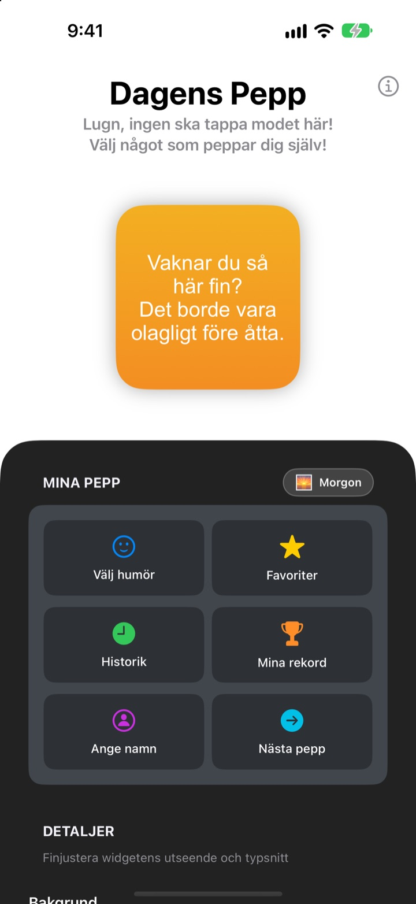
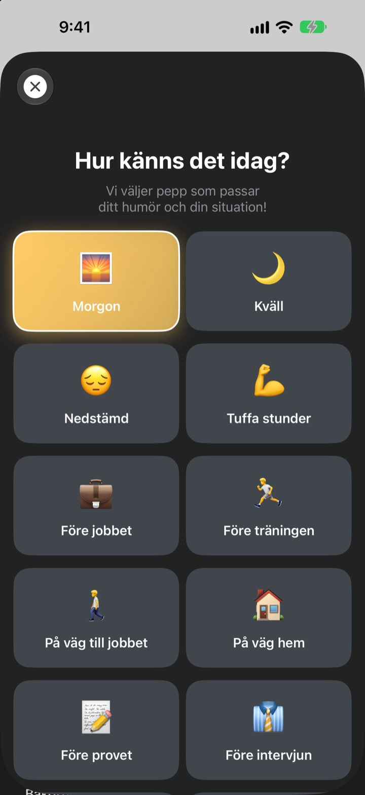
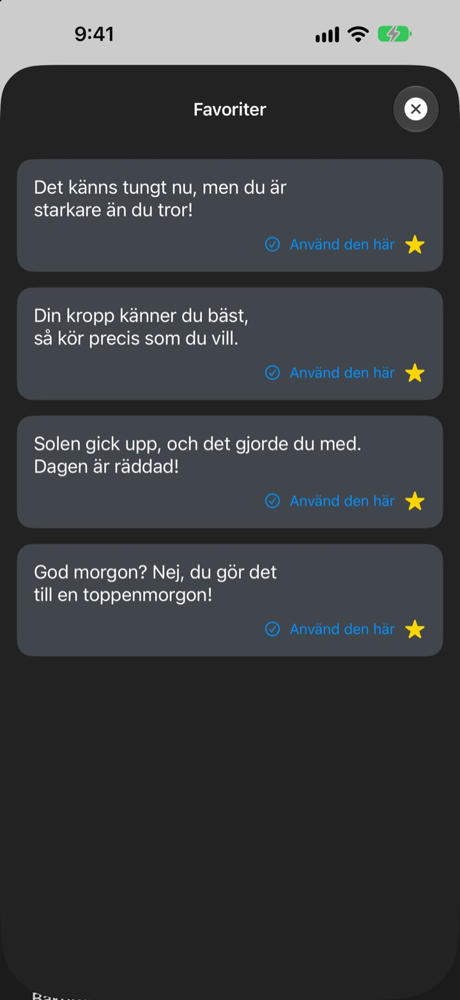
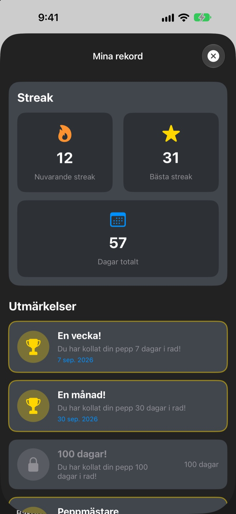

Varje gång du tar upp mobilen
väntar ditt största fan
Dagens Pepp är en widget som med flit berömmer dig alldeles för mycket. Morgonpepp på morgonen, intervjupepp före intervjun. Typsnitt, färger och bakgrund väljer du själv.
Ett köp och du har allt. Ingen prenumeration, ingen reklam.

Få lite pepp direkt
Välj ett humör så visar widgeten peppen som passar. Tryck på Nästa pepp för en slumpad bland alla 281.
Vem är din hårdaste kritiker? Är det du själv?
På väg till jobbet, före intervjun, på väg hem: Rösten i huvudet tjatar mest. Dagens Pepp står på din sida från hemskärmen flera gånger om dagen, och lite mer än rimligt. I samma stund som du drar på munnen kommer lite självförtroende tillbaka.
Pepp som passar humöret
Välj bland 14 humör och lägen som Morgon, På väg till jobbet, Tuffa stunder, Före intervjun eller Före dejten, så landar rätt pepp direkt på widgeten. Kan du inte välja? Det finns Slump också.

Spara dina favoriter
Tryck på stjärnan för att spara peppen i Favoriter, och bläddra bakåt i Historik. Tryck på Använd den här så hamnar den direkt på widgeten.

Titta in varje dag och se det växa
Varje dag du tittar in förlänger din svit. Vid 7, 30 eller 100 dagar i rad, och vid 50 och 100 dagar totalt, låser du upp en prestation.

Kom igång i tre steg
- 1
Välj humör
Öppna
Välj humöroch tryck på det som passar just nu. - 2
Anpassa widgeten
Välj typsnitt, textfärg, bakgrund och uppdateringsintervall under Detaljer.
- 3
Lägg den på hemskärmen
Håll fingret på hemskärmen, tryck på + och leta upp Dagens Pepp.
Så gör du widgeten till din
- Typsnitt
- 13 val, bland annat Futura, Georgia och Marker Felt
- Textfärg
- Vilken färg du vill
- Bakgrund
- En gradient i två färger eller en av de inbyggda bilderna
- Justering
- Vänster, centrerat eller höger
- Radavstånd
- Tätare eller luftigare rader
- Uppdateringsintervall
- Ny pepp var 5:e, 15:e eller 30:e minut
Widgetens storlek väljer du när du lägger till den på hemskärmen.
Köp den en gång, sen är det klart
Appen
- 281 peppar för 14 humör
- En hemskärmswidget i din stil
- Favoriter och Historik
- Sviter och prestationer
Stöd utvecklaren
- Välj en liten, mellan eller stor dricks
- Den låser inte upp något. Det är bara ett sätt att säga tack
Bara om och när du känner för det.
Ingen prenumeration, inga extraköp, ingen reklam.
Vanliga frågor
Hur lägger jag till widgeten?
Håll fingret på en tom plats på hemskärmen tills symbolerna vickar, tryck på + högst upp, sök efter Dagens Pepp och välj en storlek.
Hur väljs nästa pepp?
När du väljer ett humör hamnar en pepp för det direkt på widgeten. Sedan visar widgeten en slumpad pepp bland alla 281 med det intervall du valt. I appen kan du också trycka på Nästa pepp för att byta själv.
Kan jag ändra typsnitt eller uppdateringsintervall?
Ja. Under Detaljer ändrar du typsnitt, textfärg, bakgrund, justering, radavstånd och uppdateringsintervall: 5, 15 eller 30 minuter.
Widgeten ändrades inte direkt.
Det är iOS som bestämmer när widgetar ritas om, så den kan släpa lite efter det valda intervallet. Öppna appen och stäng den igen så uppdateras widgeten.
Hur fungerar sviten?
Varje dag i rad som du tittar på en pepp lägger till en dag i sviten. Under Mina rekord ser du din nuvarande svit, ditt rekord, antal dagar totalt och dina prestationer.
Mina favoriter och min historik är borta.
Allt sparas bara på din enhet och följer därför inte med om du raderar appen eller byter mobil. Om du inte raderat något och det ändå är borta, skicka ett mejl till oss.
Skickas mina uppgifter någonstans?
Nej. Appen samlar inte in några personuppgifter. Dina favoriter och din historik stannar på din enhet.
Hur rapporterar jag ett fel eller föreslår något?
Direkt via Kontakta utvecklaren i appen, via mejl eller i ett DM på Instagram till @lee25_ios. Vi svarar så fort vi har sett det.
Frågor eller idéer? Skriv till leeo@kakao.com.